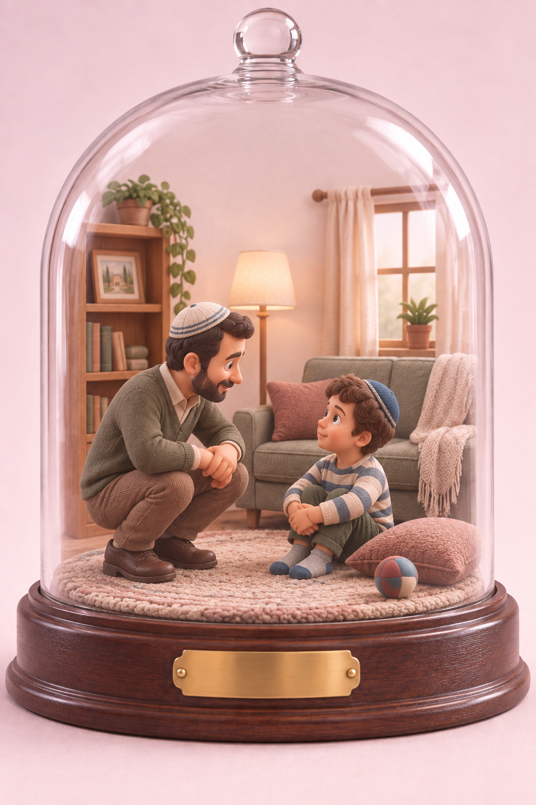

נכון, זה לא פייר
אחד הילדים חוזר מבית הספר עם ממתק. אחותו מבחינה בו, ומיד זה מתחיל:
״למה רק הוא קיבל?״
״גם אני רוצה!״
כשזה קורה, עולה בנו מיד דחף להשקיט את הקנאה: להסביר מדוע הוא קיבל, להזכיר לה שגם היא קיבלה משהו אתמול, למצוא גם לה ממתק או לפצות אותה בדרך אחרת. העיקר שלא תרגיש מקופחת.
וזה נעשה מורכב עוד יותר כשאנחנו קונים לאחד הילדים משהו שהוא זקוק לו, או נותנים לו דבר מה בעקבות מאמץ מיוחד, והאחים האחרים שומעים, מקנאים ומבקשים שנקנה גם להם.
יש בנו כהורים רצון טבעי שאף אחד מילדינו לא ירגיש מקופח. קשה לנו לראות ילד אחד מקבל ואת אחיו מביט בו, מקנא ורוצה גם.
המשך
קנאה יכולה להיות נוכחת. זהו רגש טבעי שעולה, והשאלה, כמו תמיד, היא מה עושים איתו.
אני יכול להיות עם הילדה בתוך התחושה ולומר:
או:
אני לא ממהר להסביר לה מדוע אין לה סיבה לקנא, וגם לא מסדר מיד את המציאות מחדש כדי שהרגש ייעלם. אני נותן מקום למה שהיא מרגישה.
כשאני אומר לילדה: ״נכון, זה לא פייר״, איני קובע שנעשה כאן עוול. אני נכנס לרגע לנעליה ופוגש את החוויה שלה.
מנקודת מבטה, זה באמת לא פייר. היא רואה את אחיה מקבל משהו שגם היא רוצה, וזה כואב.
המשך
הרי אנחנו רוצים ללמד את ילדינו לשמוח בחלקם, לפרגן לאחיהם ולא לדרוש לקבל כל דבר שמישהו אחר קיבל.
אלא שקנאה היא רגש טבעי. טבעי שהילד יקנא. הרגש כבר כאן, והשאלה, כמו תמיד, היא מה עושים איתו.
הקנאה אינה נעלמת מפני שאסרנו לדבר עליה. היא פשוט נשארת בלי מילים, ועלולה למצוא לעצמה דרך אחרת לצאת. דווקא כשאנחנו נותנים לה מקום, היא יכולה לאט לאט להתרכך.
הילד יכול לדבר על הקנאה, אך לא לחטוף, להציק או לדרוש לקבל גם.
המשך
הילדים שלי יודעים שלא תמיד כולם מקבלים אותו הדבר. אחד זקוק לנעליים חדשות והשני לא. אחד מקבל משהו בעקבות מאמץ שהשקיע, ואחד פשוט חזר מבית הספר עם ממתק.
איננו צריכים למהר לחלק עוד ממתק או מתנה, וגם לא לפתוח טבלת אקסל משפחתית למעקב אחר מי קיבל מה ומתי.
זה נכון גם בכיתה. לפעמים תלמיד מסוים זקוק לעוד זמן, לעזרה או למחווה קטנה, והמורה חושש מיד: מה יאמרו האחרים? הוא מתחיל להסביר מדוע רק הילד הזה קיבל.
אבל יחס שונה ברגע מסוים אינו יחס מועדף קבוע. אין צורך לחשוף בפני כל הכיתה את צרכיו של הילד כדי להוכיח שהמורה הוגן. אפשר להבין את הקנאה שהתעוררה אצל האחרים, ועדיין לתת לכל ילד את מה שהוא זקוק לו.
כך גם בחיים. חבר יקבל משהו שהוא רצה. אח יצליח במקום שבו הוא התקשה. מישהו אחר יזכה בתפקיד, בפרס או במחמאה.
לא תמיד החיים יחלקו הכול בשווה, וגם אנחנו כהורים לא נוכל למנוע מילדינו כל מפגש עם קנאה.
חינוך או אילוף?
אני מבקש מהילד לסדר את המיטה.
״אין לי כוח.״
״אני אסדר אחר כך.״
אני מבקש שוב, הוא ממשיך להתווכח, ואני כבר רוצה לסיים עם זה. אז אני מציע:
פתאום הוויכוח נגמר. בתוך רגע המיטה מסודרת.
בערב אני רוצה שייכנס למקלחת. הוא מורח את הזמן, ואני מבטיח לו שאם ייכנס עכשיו יקבל שוקולד.
למחרת אני רוצה שיעזור לערוך את השולחן, ושוב מחפש מה אוכל להציע לו בתמורה.
המשך
רציתי שהילד יעשה משהו, הצעתי לו תמורה וקיבלתי את ההתנהגות שרציתי. לא נדרשתי לחכות, להתמודד עם ההתנגדות שלו או לעבור איתו תהליך. מצאתי קיצור דרך.
זה יכול לקרות גם בכיתה. אני רוצה שהתלמידים יתפללו בקול, ולכן מניח חבילת ממתקים על השולחן. מי שמתפלל בקול מקבל ממתק. פתאום כולם מתפללים בקול.
חינוך הוא תהליך. הילד לא תמיד ירצה מיד לעשות את מה שביקשתי. לא תמיד הוא יבין כבר היום מדוע הדבר חשוב.
אצטרך לבקש, להזכיר, לעמוד על שלי, לתת דוגמה אישית ובעיקר להתאזר בסבלנות.
המשך
הרבה יותר קל להשתמש בנשק הזמין והנוח של התגמול. בתוך רגע הילד מסדר, עוזר או מתפלל בקול. קיבלתי את התוצאה שרציתי בלי שנאלצתי באמת לחנך.
אבל כאשר זו נעשית השפה הקבועה בבית, כל בקשה הופכת לעסקה קטנה. הילד לומד שלא עושים מפני שצריך, מפני שאכפת לנו או מפני שאנחנו חלק מהבית. עושים כאשר התמורה משתלמת.
ואז, כשאני מבקש ממנו לעזור, הוא שואל:
למה שלא ישאל? הרי זו השפה שלימדתי אותו.
אילוף מחפש את הדרך המהירה ביותר להשיג מן הילד את ההתנהגות הרצויה. חינוך מבקש לבנות אצל הילד הרגלים, אחריות, ערכים ומוטיבציה פנימית. את כל אלה אי אפשר לקנות בממתק או בתגמול חיצוני.
המשך
הממתק בפני עצמו אינו הבעיה. אפשר לציין מאמץ, לחגוג הצלחה וליצור חוויה טובה. בבית אפשר, למשל, להפתיע את הילדים בשוקולד אחרי שהתאמצנו יחד בהכנות לשבת. לא הבטחנו אותו מראש ולא קבענו מחיר לכל משימה. הוא פשוט מצטרף לרגע נעים של עשייה משותפת.
כך גם בכיתה. אם אני רוצה ליצור אווירה חגיגית ונעימה סביב התפילה, אני יכול לחלק ממתק לכולם. זו חוויה משותפת, לא תשלום על כל מילה שנאמרה בקול.
חינוך הוא עבודה של הילד, אבל הוא גם עבודה שלנו. הוא דורש מאיתנו לוותר לפעמים על התוצאה המהירה, לשאת את ההתנגדות ולהאמין בתהליך גם כשעדיין איננו רואים את תוצאותיו.
אני מאמין לך
הילד משחק בכדור בסלון. אני מבקש ממנו לצאת לשחק בחצר. הוא רוצה להמשיך דווקא כאן, אבל אני עומד על הבקשה.
כעבור זמן אני חוזר לסלון. אחת הכריות על הרצפה והכדור ליד הספה. אולי הוא בכל זאת שיחק כאן אחרי שיצאתי.
״לא.״
יש לי סיבה לחשוד, אבל לא ראיתי אותו משחק. אני יכול לשאול שוב. לבדוק אם אחיו ראה משהו. להזכיר לו איפה מצאתי את הכדור ולחכות להסבר.
אני חושש שאם אאמין לו והוא לא אמר לי את האמת, אאבד את הסמכות שלי. שהילד יחשוב שהצליח להטעות אותי, ושבפעם הבאה יוכל שוב לעשות מה שביקשתי שלא יעשה ולומר ״לא עשיתי״.
המשך
אני לא רוצה שהילד יראה בי הורה שאפשר להסתיר ממנו דברים. לכן מתעורר בי צורך להמשיך לשאול עד שאדע. עד שהוא יודה, או עד שאמצא מישהו שיאשר את דבריו.
וכך הבית מתחיל להתנהל קצת כמו משחק של שוטרים וגנבים. אני מחפש דרך לגלות מה עשה, והוא מרגיש שעליו להתגונן מפני השאלות שלי.
אבל כשאני בטוח בסמכות שלי ובמקום שלי כהורה, אני יכול לבחור אחרת. גם אם אאמין לו ובסוף יתברר שטעיתי, הסמכות שלי לא נפגעה. היא נשענת על הביטחון הפנימי שלי במקום שלי, ואינה נקבעת לפי מה שהילד עשה או הצליח להסתיר ממני.
אני יכול לומר לו: ״אני סומך עליך. תחשוב רגע ותספר לי מה קרה.״
ואז להקשיב לתשובה.
המשך
אם הוא מספר ששיחק, נדבר על כך שעשה דבר שביקשתי ממנו לא לעשות. אבל אם הוא חוזר ואומר שלא שיחק בסלון, אני אומר:
ייתכן שעדיין נשאר בי ספק. ובכל זאת, אני בוחר לקבל את דבריו. מבחינתי, כך היה, ומכאן אנחנו ממשיכים. זו החלטה שלי כהורה.
אם אמרתי לו שאני מאמין לו, לא אגש אחר כך לשאול את אחיו מה ראה. לא אחפש ראיות מאחורי גבו. אני רוצה שהילד ירגיש שקיבלתי את דבריו.
אני רוצה שיכיר את עצמו גם כך. שירגיש שהאמון שלי בו אמיתי, ושיהיה לו חשוב לשמור עליו. ככל שהמילה שלו מתקבלת ברצינות, כך יש לו סיבה לקחת אחריות על הדברים שהוא אומר.
המשך
ייתכן שהילד לא אמר לי אמת, ולא אדע זאת. לעומת זאת, אם הוא באמת אמר אמת ואני ממשיך לחקור אותו, לשאול אחרים ולחפש הוכחות, אני משדר לו שהמילה שלו אינה מספיקה לי - שהוא בעיניי ילד לא אמין. כשהמסר הזה חוזר שוב ושוב, הוא עלול לפגוע בדרך שבה הילד רואה את עצמו, ובהמשך גם בנכונות שלו לומר לי אמת.
אני מבקש ממנו שלא ישחק בכדור בסלון, והבקשה הזאת נשארת בעינה. אפשר להזכיר אותה גם עכשיו: ״בסדר. אני מאמין לך. הכדור נשאר בחצר.״ אני עומד על הגבול שהצבתי בלי להפוך כל חשד לחקירה.
לא אענה לו: ״אתה רואה? ידעתי שאתה משקר!״ הוא הצליח לחזור ולספר לי את האמת, אף שכבר נתן תשובה אחרת. אני רוצה להשאיר לו את האפשרות הזאת.
נתייחס לכך ששיחק בסלון, אבל לא נהפוך את הרגע שבו בחר לומר אמת למלכודת שתגרום לו להצטער שסיפר.
המשך
אם ראיתי בעצמי שהילד שיחק, אדבר איתו על מה שראיתי. אין צורך לשאול אותו שאלה שאני כבר יודע את התשובה עליה. ואם הוא אמר לי שלא שיחק, אוכל לומר: ״ראיתי ששיחקת. חשוב לי שתוכל לספר לי את האמת גם כשלא עשית את מה שביקשתי.״
אני מתייחס למה שאמר ברצינות. איני קורא לו שקרן ואיני מודיע לו שהפסקתי להאמין לו. הילד יכול לומר דבר שאינו נכון, ואז לתקן את דבריו. אני רוצה שהוא ידע שגם אחרי שטעה, אני ממשיך לראות בו אדם שיכול לומר אמת ושאפשר לתת בו אמון.
זו המטרה שלשמה אני בוחר להאמין לילד: אני רוצה לגדל ילד שאומר אמת. ילד שמרגיש שהמילה שלו חשובה, שאבא סומך עליו, ושגם הוא רוצה להיות אדם שאפשר לסמוך עליו.
